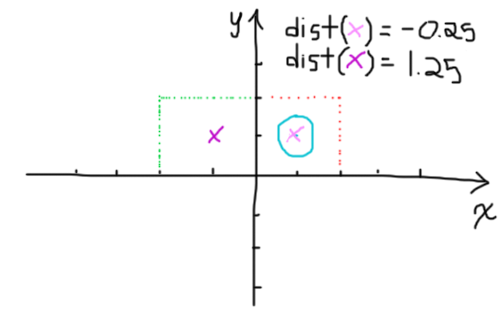

Today we'll be exploring domain repetition. In a nutshell, the repetition portion enables us to take a single object and render infinitely many instances of it in space with almost no extra computational cost.
The idea behind domain repetition is fairly straightforward. Instead of computing the distance between a given point and the scene geometry, we look at the distance between some modulus of the point and the scene. "Straightforward? Did he seriously write 'straightforward'? What in the world is this pretentious asshole even trying to say?" Let's make sense of the obtuse crap I wrote and illustrate it with an example in 2D.
Above we have a circle centred around (1,1). Let's say we want that circle to repeat infinitely many times along the x axis, where we repeat the contents of the red dotted box. With the repetition, we wish for our distance function to tell us that the point (-1,1) lies within the circle. However the distance function will evaluate to something close to 1.25.
In other words, if the point we're given is in the green box, we want to move it over two units along the x axis before computing the distance function, but only if its x is in the [-2,0] range. Since we want the circle to repeat infinitely many times along the x axis we can generalize this idea using the modulo operation. For any point p we'll calculate the point q, with coordinates (mod(p.x,2),p.y) then evaluate the distance function for q.
In the image above, the purple x at (-1,1) would normally lie 1.5 units away from the nearest surface, but by computing the distance of it, modulo the x coordinate with 2, we get a distance of -0.5 (ie. it's in the middle of the circle).
Assuming circle() is a distance function describing our circle centred around (1,1), we would have the following world distance function pseudo-code.
world(p) {
q = [p.x % 2, p.y];
return circle(q);
}world() would yield the following very-poorly-drawn-my-apologies-ladies-and-gentlemen-I'm-working-with-a-crappy-trackpad-my-bad distance field:
Now something is worth noting here - the distance field pictured above is a "proper" distance field, meaning the distance given at any point in space accurately represents the distance between that point and the nearest surface. This may seem inconsequential but is very deliberate and necessary. Had we poorly positioned the circle or "red box" (ie. the selected area to repeat over our world), the distance field may have been broken. This breakage would undoubtedly cascade down to the final render.
Let's illustrate this with an example. Let's say we have a circle of radius 0.5 centred at (0.5,0.5) and that we wanted to repeat the (0,0) to (2,2) region infinitely many times along the x axis.
As you can see, we have here a little case of the oopsies. The distance function returns 1.8 for the purple point (because if we take the modulus of 1.8 by 2 we get 1.8) when we would in fact want it to evaluate to 0.2.
Think about the red dotted square region as a tile you'd be placing on your brand spankin' new bathroom floor. Let's say the distance field dictates the colour on your tile. In order for the distance field to be "valid", the colour needs to always change smoothly between neighboring areas. What I mean is that you should have no sudden jump in the colour when you lay out all of those bathroom tiles. In other words, they should tile properly. If there's an error and the tiles don't line up (as in the example above) it'll fuck up your entire scene with a score of gross rendering artifacts.
But my bathroom floor! NO! NOOOOOOOOOOO! ;-;
The point I'm making here is that the distance field should return the same value along opposing edges. This is the case when the circle is in the middle of our tile, but not when it's in the lower left corner because the distance function along the left side will report lower distances than on the opposing side.
Alrighty then. Enough bathroom floor talk for today, let's get on to some actual code! We'll tweak the code from one of the previous posts to demonstrate this concept. You can get a hold of the source here: https://www.shadertoy.com/view/4dG3RK.
float distanceToNearestSurface(vec3 p){
vec3 q = vec3(mod(p.x, 3.0) - 1.5, p.yz);
float s = 1.0;
vec3 d = abs(q) - vec3(s);
return min(max(d.x, max(d.y,d.z)), 0.0) + length(max(d,0.0));
}I'm calculating the distance function for the point q, which is the point p with the x coordinate taken mod 3, minus 1.5. I'm doing the minus 1.5 operation to make sure the cube is centred at the middle of the "tile" - because the original cube is centred around the origin. Think of the 3 as defining the size of my red box (ie. the shape of my tile) then my minus 1.5 moving the tile down so that the cube lies in its centre.
I've made minor tweaks to the camera position and light position to better show the repition in the final scene. You can have a look at it below or here, along with the source code: https://www.shadertoy.com/view/4tcGDj.
Have fun messing around with this to create infinitely huge worlds! Up next I might cover domain deformations or textures or... who knows? Stay tuned and find out :)